漫画版
第六話「野鳥園への予告状」
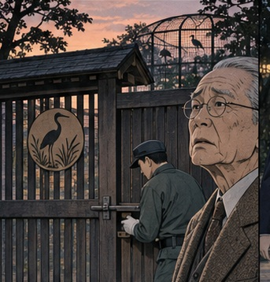
数日後・閉園時刻の野鳥園
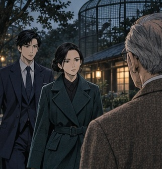
園長から連絡があった。今夜、鳥を一羽盗むという手紙が届いたそうよ。
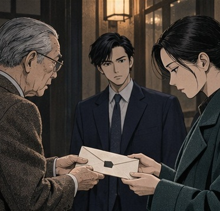
狙う鳥の名前は、手紙の一行に隠したそうです。
1 / 4
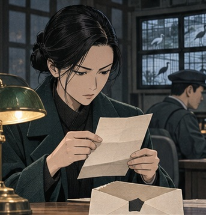
園内の警備室
君たちの宝、すべていただく
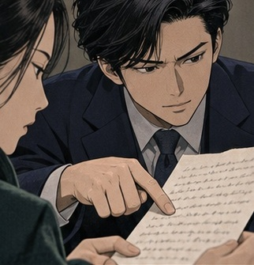
『宝』は『たから』。最初の二文字は『タカ』です。
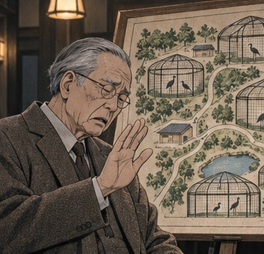
うちにタカはいません。
2 / 4
タカはいない。なら、単語の境目を外して一行を読んでみよう。
きみたちのたから、すべていただく
単語の中だけだと思い込んでました。読点の前後は？
「たから、すべて」。読点をまたぐと、カラス！
3 / 4
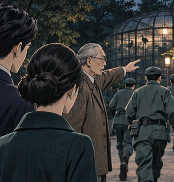
カラスの区画へ。裏の出入口にも一人お願いします。
指示を受けた職員が、奥の飼育区画へ急いだ。
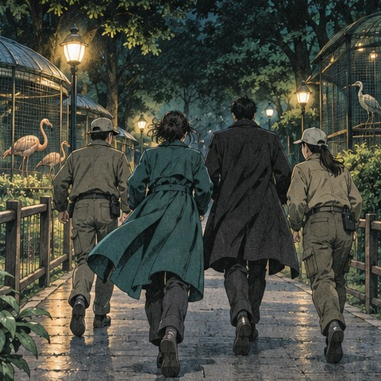
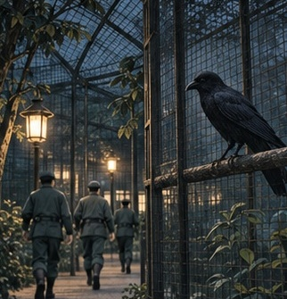
職員は園内と裏の出入口に分かれた。夜明けまでカラスに被害はなかった。
裏手では、職員が門を閉めてからカラスの区画を見回った。
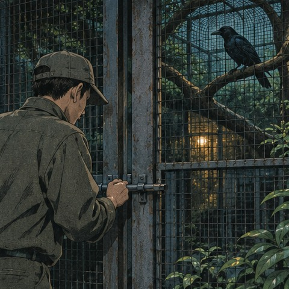
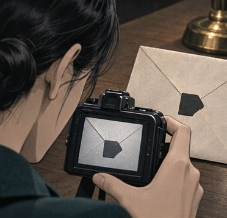
封に黒い紙が貼ってある。切り口が分かるよう、裏も撮っておこう。
4 / 4